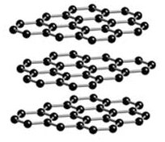

金剛石
1AUHC6wpgF676cEd8uZX6cU8BucGU4KAP7
鑽石的礦物名稱叫金剛石，人們一般稱經過琢磨的金剛石為鑽石。金剛石的化學成分是純碳，硬度為 10，是自然界中最堅硬的物質，比重3.47至3.55，折光率2.42。為八面或十二面體的結晶。性脆、透明，不怕強酸強鹼的侵蝕。
金剛石的化學成分是純碳，石墨的化學成分也是純碳，金剛石堅硬無比，而石墨質地非常軟。這是因為石墨中的碳原子是成層排列的，原子間的結合力很小，金剛石中的碳原子則是交錯整齊地排列成立方體結構，每個碳原子都緊密地與其他 4個碳原子直接連接，構成一個牢固的結晶體。要使碳原子形成這樣的結構，需要2千攝氏度高溫和5萬個大氣壓。人們現在已經能夠利用高溫高壓製造出人造金剛石。
金剛石一般是無色的。經過琢磨的金剛石可以產生耀眼的光芒。一般認為1克拉以上的為大金剛石，100克拉以上的為特大金剛石。特大塊的金剛石極為罕見，目前世界上僅三十餘塊，其中最大的“庫利南”重3106克拉，是1905年在南非發現的（庫利南鑽石是世界上最大的金剛石，發現於1905年，產地為南非德蘭士瓦的普雷米爾礦山。發現此礦山的人姓庫利南，金剛石即此得名。庫利南鑽石無色，重3106克拉，約合621克。此鑽石被當地政府購買後作為禮物贈給當時的英王愛德華七世。後由著名的阿姆斯特丹公司切割成9塊大鑽石和96粒小鑽石，這些鑽石全部無瑕，其中最大的一顆取名非洲之星（也叫庫利南一號），重530.2克拉，被加工成梨形鑲在英國國王的權杖上，第二大的叫庫得南二號，重317克拉，鑲在英王王冠上）。
評價鑽石的標準稱為四C標準，即重量、顏色、潔淨和琢磨（這四個詞的英文第一個字母都是C）。其他條件相同，越重則越珍貴；鑽石因各種原因，常有顏色方面的不同，各國的分級標準也不統一。最常見的為白色、淡黃色，有些藍色、粉紅色、綠色、紫色等，被視為特殊色，由於稀有，成為鑽石中的珍品；多數鑽石中都有程度不同的瑕疵，如外面的擦痕、蹦碴、刻痕等，內部的裂痕、白花、黑點等。瑕疵自然是越少越好，瑕疵越靠近中間越不好；對金剛石的加工很有講究，標準的鑽石冠部角度應是34°30，亭部角度應是40°45，這樣才能充分利用鑽石的折光率，顯示出耀眼的光輝。
金剛石原生於金伯利岩中，除金剛石外，金伯利岩中還可含鎂鋁榴石和貴橄欖石。金伯利岩屬於岩漿型礦床，金剛石晶體不均勻地散佈在金伯利岩的基質中，以小晶體為主，平均重量為百分之幾克拉到十分之幾克拉。實際選礦回收的是大小在0.5至1毫米以上的金剛石顆粒。最大的含金剛石的金伯利岩礦床位於赤道非洲和南部非洲。金伯利岩，又稱藍地。是一種深色的、重的、常常經過蝕變和角礫化的（破碎的）侵入岩，是已知的唯一在母岩中找到原生金剛石的岩石。
關於金剛石的成因有多種說法，最值得注意的是深部岩漿成因的概念。這種概念認為金剛石是早期岩漿礦物，因金伯利岩漿中壓力不斷增高而結晶出來的。
|  | |
金剛石中的碳原子排列 |
石墨中的碳原子排列 |